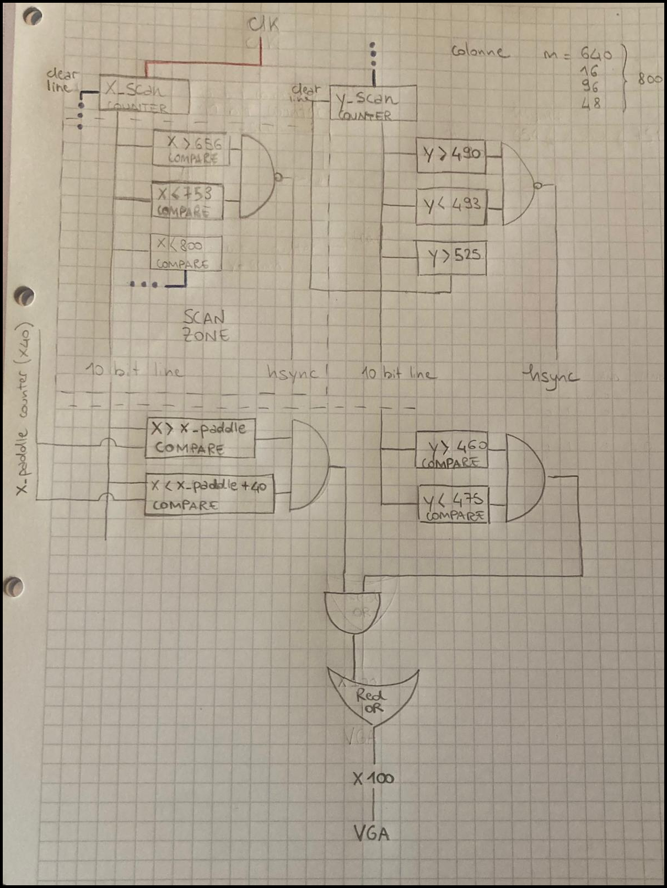
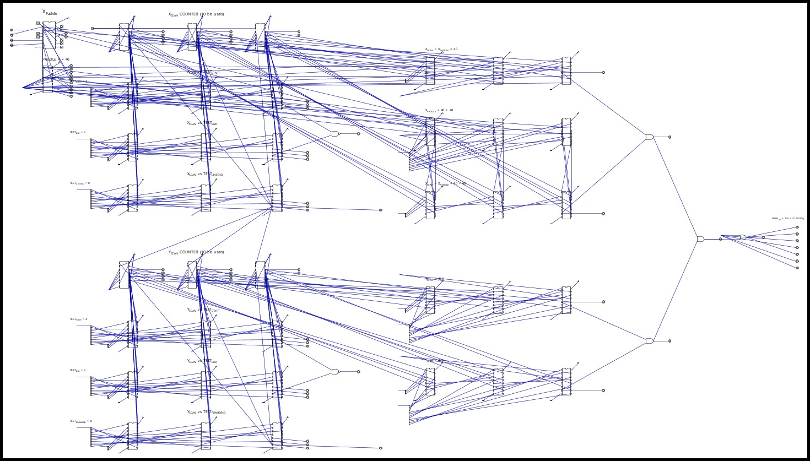
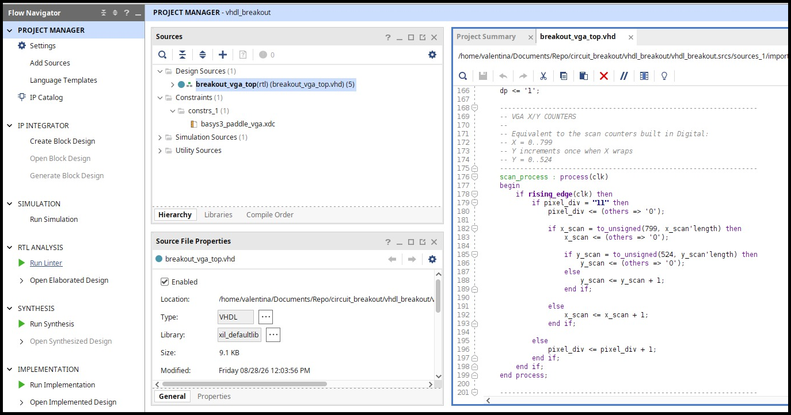
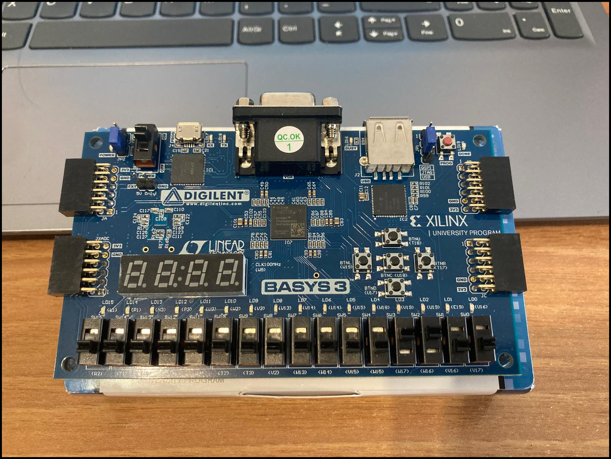

Funzione
Definiamo il comportamento che vogliamo ottenere.
Un videogioco ricostruito pensando prima alla macchina fisica che deve farlo esistere.
Funzione → circuito su carta → Digital → VHDL → FPGA → VGA → pixel.
THE QUESTION
L'IDEA
Per ogni comportamento del gioco ci fermiamo prima del VHDL e ragioniamo come se dovessimo costruire davvero quella funzione con componenti logici.
Come si memorizza la posizione della racchetta? Come si rileva un bordo? Come si cambia direzione? Come si scandiscono i pixel? Prima vengono contatori, comparatori, registri, segnali di clock e logica di controllo. Il VHDL arriva dopo: serve a descrivere una macchina che abbiamo già iniziato a pensare.
IL METODO
La stessa funzione attraversa rappresentazioni diverse, ma deve rimanere riconoscibile dall'inizio alla fine.
Definiamo il comportamento che vogliamo ottenere.
Disegniamo componenti, segnali e relazioni.
Costruiamo il circuito e ne verifichiamo la logica.
Descriviamo l'hardware avendo in mente il circuito.
Sintesi e implementazione trasformano la descrizione in risorse reali.
La logica genera direttamente sincronismi VGA e colore.
UN CASO CONCRETO
Nel software siamo abituati a descrivere il risultato. Qui proviamo invece a identificare gli elementi fisici necessari per produrlo.
if (ball_x >= border) {
velocity_x = -velocity_x;
}DAL FOGLIO ALLA FPGA
Un’unica logica, quattro rappresentazioni.
Dal primo schema su carta fino all’hardware reale.




VIDEO DI PRESENTAZIONE
Una breve presentazione di Programmable Logic Breakout: l’idea, il metodo di progettazione e il percorso dal circuito pensato su carta fino all’implementazione su FPGA.
ARCHEOLOGIA TECNOLOGICA
Programmable Logic Breakout torna alla relazione originaria fra regola di gioco, circuito e immagine. Cinquant’anni dopo, una FPGA permette di rileggere quella logica come strumento contemporaneo di progettazione, sperimentazione e comprensione.
APPROFONDIMENTI
Il sito racconta il progetto. Il repository mostra circuiti, VHDL e implementazione.
CONTATTI